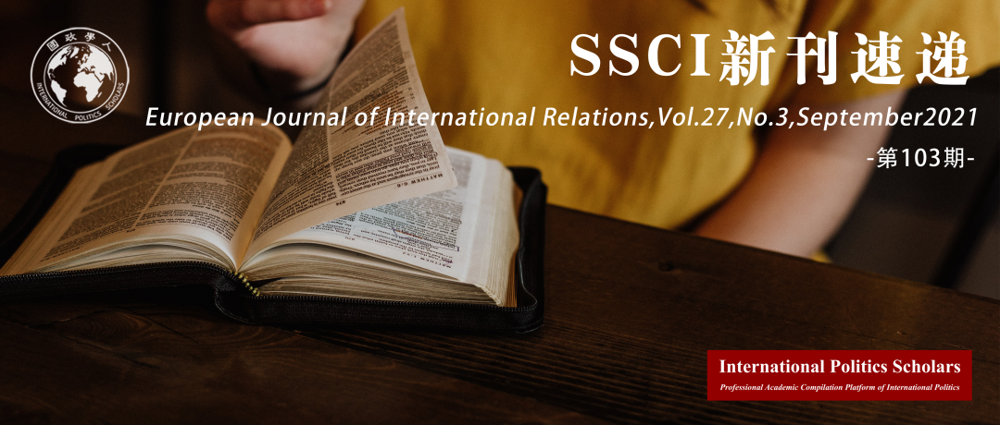

收录于合集 #新刊速递 123个

期刊简介
《欧洲国际关系杂志》（ European Journal of International Relations ）是欧洲政治研究联盟国际关系常设小组（the Standing Group on International Relations of the European Consortium for Political Research, SGIR）的同行评审旗舰期刊，由SGIR和欧洲国际研究协会组成的联合委员会共同管理。根据Journal Citation Reports显示，2019年该期刊的影响因子为3.474。

本期目录
1. 生物信息外交：全球卫生突发事件、数据共享和序贯寿命
Bioinformational diplomacy: Global health emergencies, data sharing and sequential life
2. 为什么相互冲突的国家还在国际监管方面保持有弹性的合作？以19世纪60年代至1914年的英国和电报为例
Why do states in conflict with each other also sustain resilient cooperation in international regulation? Britain and telegraphy, 1860s–1914
3. 声誉危机管理与国家：将遏制政策理论化为一种外交模式
Reputation crisis management and the state: Theorising containment as diplomatic mode
4. 弱联结的优势：替代外交性社会联结中的身体共现
The strength of weak bonds: Substituting bodily copresence in diplomatic social bonding
5. 国际组织中基于类比的集体决策与渐进变化
Analogy-based collective decision-making and incremental change in international organizations
6. 贫穷国家的政治体制和外国投资：来自最为相似的非洲案例的见解
Political regimes and foreign investment in poor countries: Insights from most similar African cases
7. 债务重组对发展中国家收入不平等的影响
The effects of debt restructurings on income inequality in the developing world
8. 基础设施金融、后发与中国重塑国际信贷治理
Infrastructure finance, late development, and China’s reshaping of international credit governance
9. 后殖民时代的移民国家
The postcolonial migration state
10. 内战重现与战后暴力：转向综合研究议程
Civil war recurrence and postwar violence: Toward an integrated research agenda
11. 对解释性国际研究因果解释的再思考
Rethinking causal explanation in interpretive international studies
01
生物信息外交：全球卫生突发事件、数据共享和序贯寿命
题目： Bioinformational diplomacy: Global health emergencies, data sharing and sequential life
作者： Stefan Elbe，苏塞克斯大学全球研究学院国际关系学教授。
摘要： 21世纪，新冠肺炎(COVID-19)等全球突发卫生事件成为了重大且反复出现的威胁。通过分析新病原体的详细基因序列数据，现代社会可以更好地防范这类令人痛心的疫情。那么，为什么这种宝贵的知识资源经常被利益攸关方扣留——不仅阻碍了国际社会对此及时反应，并有可能将生命置于危险之中?本文开启了生物信息外交领域的社会科学研究，即围绕全球卫生突发事件的生物信息进行及时地国际交流，研究因此而出现的紧张局势、敏感问题、有关实践与促进手段。这篇文章从系谱的角度将这一新兴领域定位于分子化生命、信息化生物学和证券化健康的交叉点。本文调查了产生这一新兴领域的深层政治、经济和科学问题。最后，文章分析了各国政府、科学家和工业界所设计的全球突发事件应对工具——通过数据护照的新做法促进更快速的全球生物信息共享。总的来说，对生物信息外交的深入研究揭示了国际关系与生命科学之间的关系不仅相互深深纠缠，甚至可视作其组成部分——通过仔细追踪分子层面的生命测序这一实验，也能最终重塑国际关系中的主权、权利与安全。
Global health emergencies – like COVID-19 – pose major and recurring threats in the 21st century. Now societies can be better protected against such harrowing outbreaks by analysing the detailed genetic sequence data of new pathogens. Why, then, is this valuable epistemic resource frequently withheld by stakeholders – hamstringing the international response and potentially putting lives at risk? This article initiates the social scientific study of bioinformational diplomacy, that is, the emerging field of tensions, sensitivities, practices and enabling instruments surrounding the timely international exchange of bioinformation about global health emergencies. The article genealogically locates this nascent field at the intersection of molecularised life, informationalised biology and securitised health. It investigates the deeper political, economic and scientific problematisations that are engendering this burgeoning field. It finally analyses the emergent international instruments developed by governments, scientists and industry to facilitate more rapid global sharing of bioinformation through novel practices of data passporting. Overall, the in-depth study of bioinformational diplomacy reveals just how deeply, and even constitutively, international relations are entangled with the life sciences – by carefully tracing how laboratory practices of sequencing life at molecular scale also end up recontouring the play of sovereignty, power and security in international relations.
02
为什么相互冲突的国家还在国际监管方面保持有弹性的合作？以19世纪60年代至1914年的英国和电报为例
题目： Why do states in conflict with each other also sustain resilien cooperation in international regulation? Britain and telegraphy, 1860s–1914
作者： Perri 6，伦敦玛丽女王大学工商管理学院；Eva Heims，约克大学政治系讲师。
摘要： 本文比较了来自国际关系学、政治学和公共管理学的五种主流理论的解释力，以理解为什么——当国家间加深冲突和紧张甚至准备战争时——可能同时维持在全球监管机构中的深化合作。对解释力的分析集中在五个关键方法论优点之间的权衡，并将缓冲作为国家统一性的指标。本文通过对从1865年国际电报联盟(ITU)成立到第一次世界大战爆发期间，英国对首个国际监管制度，即国际电报联盟和1884年的海底电缆公约(SCC)的承诺这一关键案例的分析，检验了这些理论。本文作者使用英国国家档案馆的档案来重建英国在电报政策上的决策，作为一国国家决策的案例。本文关注四个关键决策集群，跨越三个子阶段。研究发现，每一种理论都可以描述性地捕捉到某些子时期的一些发展，但不是出于理论中确定的因素，也没有通用性。因此，本文通过分析方法论优点之间的取舍，为今后的理论发展工作提供了基础，并论证了理论比较的价值。
This article compares the explanatory power of five mainstream theories from International Relations, political science and public management in understanding why – when they are engaged in deepening conflict and tension and even preparations for wars – states might simultaneously sustain deepening cooperation in global regulatory bodies. Analysis of explanatory power focuses on trade-offs among five key methodological virtues, and on buffering as an indicator of state unitariness. The theories are examined against the crucial case of one state’s commitment to the first international regulatory regime, the International Telegraph Union (ITU) and the Submarine Cable Convention (SCC) of 1884, from the founding of the ITU in 1865 to the outbreak of the Great War. In this article, we use UK National Archives files to reconstruct Britain’s decisions in telegraphy policy as our case of a state’s decision- making. We focus on four key clusters of decisions, spanning three sub- periods. The study finds each of the theories can descriptively capture some developments in some sub-periods, but not for the reasons identified in the theory and without generality of application. It therefore provides the basis for future theoretical development work and demonstrates the value of theory comparison by analysis of trade-offs among methodological virtues.
03
声誉危机管理与国家：将遏制政策理论化为一种外交模式
题目： Reputation crisis management and the state: Theorising containment as diplomatic mode
作者 ： Kristin Haugevik，挪威国际事务研究所高级研究员；Cecilie Basberg Neumann，奥斯陆城市大学教授。
摘要： 本文将遏制政策理论化，使之成为国家在处理国际身份和国际声誉危机时的一种外交反应模式。尽管国际关系学界普遍强调身份在国家安全中的重要性，但危机管理研究对于其本体论性质的安全危机问题则很少关注。关于公共外交的学术文献主要关注国家自身在国家品牌和声誉方面的积极建设，而有关污名化管理方面的研究则主要关注“违规”国家如何通过识别、拒绝或反驳批评来应对身份攻击。本文在上述两方面均有学术贡献。首先，文中提供的案例证明，当面临本体论安全危机时，国家并非作为统一实体行事——政府代表、官僚人员和外交官对于此种情况会扮演不同的角色并具备多种行动方案。第二，作者认为，在危机管理的外交工具中，遏制是十分重要但理论化程度不足的一部分。文章将遏制政策解释为了一种危机管理应对模式，将国际关系学中关于情感和外交的学术观点与社会心理学中关于治疗实践的学术观点进行了整合。作者选取了来自挪威的案例，研究在2016年针对挪威儿童福利服务的跨国抗议浪潮爆发后，挪威的政府代表、官僚人员和外交官如何应对国际批评的不断升级。一个关键的发现是，政府部长和官僚的主要反应模式是拒绝批评，但外交官们则主要致力于努力遏制局势，试图阻止局势的进一步升级，防止对双边关系造成长期损害。
This article theorises containment as a diplomatic response mode for states when faced with potentially harmful attacks on their international identity and reputation. Despite widespread agreement in International Relations (IR) scholarship that identities matter in the context of state security, studies of crisis management have paid little attention to ontological security crises. Scholarly literature on public diplomacy has concerned itself mainly with proactive nation branding and reputation building; work on stigma management has privileged the study of how ‘transgressive’ states respond to identity attacks by recognising, rejecting or countering criticism. Our contribution is two-fold. First, we make the case that states do not perform as uniform entities when faced with ontological security crises – government representatives, bureaucratic officials and diplomats have varying roles and action repertoires available to them. Second, we argue that containment is a key but undertheorised part of the diplomatic toolkit in crisis management. Unpacking containment as a crisis management response mode, we combine insights from IR scholarship on emotions and diplomacy with insights on therapeutic practices from social psychology. We substantiate our argument with a case study of how Norwegian government representatives, bureaucratic officials and diplomats responded to escalating international criticism against Norway’s Child Welfare Services following a wave of transnational protests in 2016. A key finding is that whereas the dominant response mode of government ministers and bureaucratic officials was to reject the criticism, diplomats mainly worked to contain the situation, trying to prevent it from escalating further and resulting in long-term damage to bilateral relations.
04
弱联结的优势：替代外交性社会联结中的身体共现
题目： The strength of weak bonds: Substituting bodily copresence in diplomatic social bonding
作者： Nicholas J. Wheeler，伯明翰大学教授；Marcus Holmes，威廉玛丽学院副教授。
摘要： 外交研究中的一个核心难题是，为什么领导人之间的互动有时会产生积极的社会联结，而有时则会导致不信任和敌意。在微观社会学领域的最新研究，即对日常互动的研究中，尤其是美国社会学家兰德尔·柯林斯的开创性研究，提出了进行积极互动的几个关键因素，其中便包括身体共现的因素。本文对这一观点提出了质疑，并说明了为什么在领导人互动中文本交流可以替代身体共现。本文证明，面对面交流形式的身体共现因素是形成强联结的必要条件，以信函形式实现的中介式互动也可以创造弱的社会联结。弱联结能够减少不信任并逐步发展信任，这对于危机的缓和至关重要。本文分析了两个案例：古巴导弹危机期间赫鲁晓夫和肯尼迪之间的信件往来，以及冷战结束时戈尔巴乔夫和里根之间的文字和面对面的互动。最后，本文在结论中指出了一个关于外交中社会联结形成的决定因素的跨学科研究议程。
One of the central puzzles in the study of diplomacy is why some interactions between leaders result in positive social bonds, while others are mired in distrust and hostility. Recent research in the field of microsociology, the study of everyday interactions, most notably the pioneering research of American sociologist Randall Collins, suggests several critical ingredients for a successful interaction, including bodily copresence. In this article we interrogate this claim and provide theoretical reasons why textual communication may serve as a proxy for copresence in leader interactions. We demonstrate that while copresence, in the form of face-to-face interaction, is required for strong bond formation, mediated interaction in the form of letters can serve to create weak social bonds. The strength of weak bonds is in the reduction of distrust and the gradual development of trust that can be critical to the de-escalation of crises. Empirically, we explore our argument in two hard cases for social bond formation: the letters exchanged between Nikita Khrushchev and John F. Kennedy during the Cuban Missile Crisis and the interactions, both textual and face-to-face, between Mikhail Gorbachev and Ronald Reagan at the end of the Cold War. We conclude by pointing toward an interdisciplinary research agenda on the determinants of social bond formation in diplomacy.
05
国际组织中基于类比的集体决策与渐进变化
题目： Analogy-based collective decision-making and incremental change in international organizations
作者： Thomas Dörfler，波茨坦大学国际关系学院博士后研究员；Thomas Gehring，班贝克大学教授。
摘要： 我们研究了成员国基于类比的集体决策如何有助于非正式规则的内生性出现和国际组织的渐进式变革。类比决策是国际组织日常决策的一个重要特征。通过类比将当前的决定与以前的决定联系起来，推动了渐进式变革，同时也加强了组织的韧性。外交政策分析文献表明，在模糊和复杂的外交政策情况下，类比法可以认为是一种认知捷径，而我们的重点是利用它们来克服国际组织中协调情况的社会模糊性（不确定性）。在心理学概念的基础上，我们开发了两个微观层面的机制，阐明了成员驱动的国际组织中基于类比的集体决策的效果。以类比为基础的集体决策强调当前情况与以往情况的相似性，遵循既定的问题模式，并产生不断扩展且日益完善的非正式规则。以类比为基础但强调关键差异的集体决策遵循不同的问题模式，并引发了适用于新类别案例的额外非正式规则的出现。其结果是为越来越多的问题提供了一个越来越精细的组织独特的解决方案网络。因此，一个组织可以越来越多地促进集体决策，并增强其韧性。在经验上，我们对南斯拉夫制裁委员会的决策进行了文献分析，该委员会是由联合国安理会设立的，负责处理一系列关于豁免某些商品或服务以应对巴尔干战争的全面经济禁运的请求。
We examine how analogy-based collective decision-making of member states contributes to the endogenous emergence of informal rules and the incremental change of international organizations (IOs). Decision-making by analogy is an important characteristic of day-to-day decision-making in IOs. Relating current decisions to previous ones through analogies drives incremental change and simultaneously reinforces organizational resilience. Whereas the foreign policy analysis literature shows that analogies can be used as cognitive shortcuts in fuzzy and complex foreign policy situations, we focus on their use to overcome social ambiguity (indeterminacy) of coordination situations in IOs. Drawing on psychological conceptions, we develop two micro-level mechanisms that elucidate the effects of analogy-based collective decision- making in member-driven IOs. Analogy-based collective decisions emphasizing similarity between a current situation and previous ones follow an established problem schema and produce expansive and increasingly well-established informal rules. Collective decisions that are analogy-based but emphasize a crucial difference follow different problem schemas and trigger the emergence of additional informal rules that apply to new classes of cases. The result is an increasingly fine-grained web of distinct organizational solutions for a growing number of problems. Accordingly, an IO can increasingly facilitate collective decision-making and gains resilience. Empirically, we probe these propositions with a documentary analysis of decision-making in the Yugoslavia sanctions committee, established by the United Nations Security Council to deal with a stream of requests for exempting certain goods or services from the comprehensive economic embargo imposed on Yugoslavia in response to the War in the Balkans.
06
贫穷国家的政治体制和外国投资:来自最为相似的非洲案例的见解
题目： Political regimes and foreign investment in poor countries: Insights from most similar African cases
作者： Arthur A Goldsmith，马萨诸塞大学波士顿分校名誉教授。
摘要： 当外国投资者选择在一个穷国投资时，他们是青睐民主国家还是专制国家？关于这个问题，尽管已经有了大量的时间序列跨国实证研究，但答案依旧不明晰。为了推动这一辩论，我采用了一种基于最相似案例设计的新方法。我观察了四个非洲国家在民主化之前、期间和之后的情况，并评估随着时间的推移，政权类型的变化是否影响了它们吸引外国投资的能力
相对于它们的基线投资水平，以及与四个没有经历过民主化的匹配国家的投资模式相比。我还控制了自然资源的稀缺性和丰富性的影响。我的差异性配对案例分析表明，引入竞争性政治机构对外国投资来说并不重要，然而这些机构的整合则带来了一个小的投资优势。
When foreign investors choose to invest in a poor country, do they favor democracies or autocracies? Despite extensive time-series cross-national empirical work on this question, the answer is unclear. To move the debate forward, I use a novel approach based on a most-similar case design. I observe four African countries before, during, and after democratization, and evaluate whether the change in regime type over time affected their ability to attract foreign investment—both relative to their baseline level of investment and in comparison with the investment patterns of four matching countries that did not experience democratization. I also control for the effects of natural resource scarcity and abundance. My difference-in-differences pairwise case analysis indicates the introduction of competitive political institutions is immaterial for foreign investment, whereas the consolidation of these institutions conveys a small investment advantage.
07
债务重组对发展中国家收入不平等的影响
题目： The effects of debt restructurings on income inequality in the developing world
作者： Glen Biglaiser，北德克萨斯州大学人文社会科学学院教授；Ronald J. McGauvran，田纳西科技大学社会学与政治学院助理教授。
摘要： 背负债务的发展中国家往往希望投资者通过债务重组来填补亏损。通过债务的不完全偿还，债务国政府可能会增加社会支出、为较贫穷的选民服务，进而降低收入不平等的状况。与此相反，债务国政府也会减税并削减政府开支，以牺牲穷人的利益为代价稳固富人的资产。本文利用71个发展中国家在1986年至2016年间的时空数据，评估了债务重组对社会收入分配的影响。具体来说，文章研究了债务重组对社会支出、税制改革和收入不平等的影响。作者认为，接受债务重组的国家倾向于利用其新获得的经济灵活性来降低税收和社会支出，从而加剧了收入不平等的情况。这一结果通过了不同模型设定的稳定性测试。本文认为，债务重组对不太富裕的人所造成的经济伤害，这一结论为全球化与贫穷间关系的探讨做出贡献。
Developing countries, saddled with debts, often prefer investors absorb losses through debt restructurings. By not making full repayments, debtor governments could increase social spending, serving poorer constituents, and, in turn, lowering income inequality. Alternatively, debtor governments could reduce taxes and cut government spending, bolstering the assets of the rich at the expense of the poor. Using panel data for 71 developing countries from 1986 to 2016, we assess the effects of debt restructurings on societal income distribution. Specifically, we study the impact of debt restructurings on social spending, tax reform, and income inequality. We find that countries receiving debt restructurings tend to use their newly acquired economic flexibility to reduce taxes and lower social spending, worsening income inequality. The results are also robust to different model specifications. Our study contributes to the globalization and the poor debate, suggesting the economic harm caused to the less well-off following debt restructurings.
08
基础设施金融、后发与中国重塑国际信贷治理
题目： Infrastructure finance, late development, and China’s reshaping of international credit governance
作者： 陈沐阳，北京大学国际关系学院助理教授。
摘要： 中国的崛起对国际治理有何影响？本文以中国海外基础设施项目的主要债权人——两家中国的政策性银行为研究对象考察了基础设施融资。尽管经济合作与发展组织(OECD)领导的现有国际信贷体系将以发展为导向的援助与以商业为导向的出口信贷区分开来，但后发新兴经济体用国家支持的出口信贷大规模地投资发展项目，从而模糊了这种区别。本文认为，中国改变经合组织信用治理的方式，既体现了后发的共性，又体现了“中国式”发展的特性。政策性银行不是用国家的财政收入直接补贴企业的国际业务，而是利用各种市场工具将东道国的国有和国家协调的资产金融化。通过这种方式，它们使中国公司在欠发达地区的市场上具有比较优势，使其能够承担发达工业国家公司无法承担的项目。这种融资机制重塑了国际发展机制，将信贷分配的主导手段从国家主导的援助方式转变为以市场为基础的交换方式，并通过中央集权和自由主义的方式为发展中国家提供资金，改写了国际出口信贷制度的自由规则。因此，中国在现有信贷制度下已有的金融计划覆盖不足的地区建立了一个平行的制度。
How is the rise of China affecting international governance? This paper examines the domain of infrastructure finance by focusing on China’s two policy banks, which are the main creditors of China’s overseas infrastructure projects. While the incumbent international credit regimes led by the Organisation for Economic Co-operation and Development (OECD) distinguish development-oriented aid from commercially oriented export credits, emerging late-developed economies blur this dichotomy by largely funding development projects with state-backed export credits. The way China alters the OECD’s credit governance, this paper argues, demonstrates both the generality of late development and the peculiarity of “Chinese” development. Rather than directly subsidizing firms’ international business with the state’s fiscal revenue, policy banks financialized host country’s state-owned and state-coordinated assets using various market instruments. By doing so, they gave Chinese firms a comparative advantage in the markets of less developed regions, allowing them to undertake projects that firms from advanced industrial countries cannot. This financing mechanism has reshaped the international development regime by transforming the dominant means of credit allocation from state-led aid-giving to market-based exchange, and rewritten the liberal rules of the international export credit regime by financing the developing world in a both statist and liberalist manner. As a result, China has built a paralleled regime in regions insufficiently covered by the existing financial schemes of incumbent credit regimes.
09
后殖民时代的移民国家
题目： The postcolonial migration state
作者： Kamal Sadiq，加利福尼亚大学政治科学助理教授；Gerasimos Tsourapas，伯明翰大学讲师。
摘要： 全球南方移民政策的进化对国际关系越来越有影响。但是欧洲和北美之外的殖民地和帝国主义遗留问题对国家移民管理机制的影响仍未理论化。后殖民地国家形态如何影响南方的跨境移动管理政策？将詹姆斯·霍利菲尔德的当代“移民国家”的框架带入对后殖民主义的批判性学术研究，作者定位了“后殖民悖论”的存在，指出了南方的新独立国家面临的两组矛盾：第一，构建一个具备明确定义的民族身份的现代主权民族国家的需要与脆弱的行政能力的矛盾；第二，主权的领土现状与民族建构必须寻求建立排他的、针对对境内外人员的公民身份规范的矛盾。作者认为，利用跨境移动管理政策来调节这些矛盾将“后殖民国家”转化成了“后殖民移民国家”，这表现了与独立前实践的不同的连续性。事实上，后殖民移民国家通过监管和控制不同的、对国际经济起再劳动分配作用的移民流，重现了殖民时代的景象。作者通过印度和埃及的独立后的移民管理的对比研究，揭示了这一点，同时也为了融合了中东和南亚学术研究中问题领域的分离。作者期望对优先考虑来自更广泛的南方的区域间观点的国际移民政治采取进一步的批判性研究。
The evolution of migration policy-making across the Global South is of growing interest to International Relations. Yet, the impact of colonial and imperial legacies on states’ migration management regimes outside Europe and North America remains under-theorised. How does postcolonial state formation shape policies of cross-border mobility management in the Global South? By bringing James F. Hollifield’s framework of the contemporary ‘migration state’ in conversation with critical scholarship on postcolonialism, we identify the existence of a ‘postcolonial paradox,’ namely two sets of tensions faced by newly independent states of the Global South: first, the need to construct a modern sovereign nation-state with a well-defined national identity contrasts with weak institutional capacity to do so; second, territorial realities of sovereignty conflict with the imperatives of nation-building seeking to establish exclusive citizenship norms towards populations residing both inside and outside the boundaries of the postcolonial state. We argue that the use of cross-border mobility control policies to reconcile such tensions transforms the ‘postcolonial state’ into the ‘postcolonial migration state,’ which shows distinct continuities with pre-independence practices. In fact, postcolonial migration states reproduce colonial-era tropes via the surveillance and control of segmented migration streams that redistribute labour for the global economy. We demonstrate this via a comparative study of post-independence migration management in India and Egypt, which also aims to merge a problematic regional divide between scholarship on the Middle East and South Asia. We urge further critical interventions on the international politics of migration that prioritise interregional perspectives from the broader Global South
10
内战重现与战后暴力：转向综合研究议程
题目： Civil war recurrence and postwar violence: Toward an integrated research agenda
作者： Corinne Bara，乌普萨拉大学和平与冲突研究系助理教授；Annekatrin Deglow，乌普萨拉大学和平与冲突研究系助理教授；Sebastian van Baalen，乌普萨拉大学和平与冲突研究系助理教授。
摘要： 内战后的暴力对可持续和平构成了挑战。今天世界上的许多武装冲突都是昨日战争的重现，许多关于战后暴力的文献都对为何武装团体会重回战场这一问题进行了解释。然而，即使和平趋势占据主流，很多其他类型的暴力也会在战后大环境中发生。同样，这种战后暴力也受到越来越多的学科领域研究的关注。利用引文网络分析我们发现，尽管相互关联，有关战争复发的研究和有关战后暴力的研究却是在相对孤立的环境下分开进行的。这种分割导致我们忽视了战后不同形式暴力驱动因素的重要相似性和差异性，本文通过回顾这两个密切相关领域的文献证明了上述观点。虽然战争复发和战后暴力有一系列相同的风险因素，但其中一些因素对这两种结果的影响是相反的。而由于这些见解只有在系统地比较这两类文献时才能进一步得出，所以我们提出了一个研究战后暴力的新框架，旨在克服这两个研究领域的分割性。这一框架既是一个概念透镜，也是一个分析工具，用于对战后不同形式的暴力进行分类与比较。在此之后，我们概述了该框架如何帮助学者们追求一个更为综合的研究议程，并对应该研究的研究问题提出了具体建议，以提高我们对战后暴力现象的理解能力。
Violence after civil war is a challenge to sustainable peace. Many armed conflicts today are recurrences of previous wars and much of the literature on violence after war explains why armed groups return to the battlefield. But even if peace prevails, many other types of violence take place in postwar environments. This postwar violence is likewise subject to a growing multidisciplinary literature. Using citation network analysis, we show that research on war recurrence and postwar violence has developed in relative isolation from each other—although these phenomena are interrelated. This compartmentalization leads us to overlook important similarities and differences in the drivers of different forms of violence after war. We demonstrate this by reviewing the literature in both of these closely related fields. While war recurrence and postwar violence share a set of common risk factors, some factors can have opposite effects on the two outcomes. Because these insights only emerge when systematically comparing the two strands of literature, we propose a novel framework for the study of violence after wars that aims at overcoming the compartmentalization of research within these two fields. The framework serves both as a conceptual lens and an analytical tool to categorize and compare different forms of violence after war. We then outline how the framework aids scholars in pursuing an integrated research agenda, with concrete suggestions for research questions that should be studied to expand our understanding of violence after wars.
11
对解释性国际研究因果解释的再思考
题目： Rethinking casual explanation in interpretive international studies
作者： Ludvig Norman，斯德哥尔摩大学政治学副教授和加州大学伯克利分校欧洲研究所高级研究员。
摘要： 本文开发了一个适合解释型国际关系(IR)研究的因果解释模型。越来越多的学者在强调共识、身份和社会实践对其解释的重要性的同时，转向了因果调查。这一举措具有相当大的潜力，可以增加解释学方法对国际关系的贡献。然而，本文指出了这种研究所基于的因果模型的缺陷，正是这些缺陷限制了这种潜力。本文对这些局限性进行了详细的讨论，并为解释型国际关系的因果解释提供了一个替代模型。该模型建立在对构成性分析和因果性分析的明确区分上，并对它们如何结合以产生因果解释提供了明确的论证。这就为更明确的因果解释的概念铺平了道路，而不是通常解释性国际关系中的情况。此过程中，它还提供了一个更加连贯和详细的说明，即解释学解释与更多主流方法的交汇点以及它们的不同之处。最后，本文通过对一种最新形式的解释过程追踪(IPT)的讨论，概述了该模型的应用。
This article develops a model for causal explanations amenable to interpretive International Relations (IR) research. A growing field of scholars has turned toward causal inquiry while stressing the importance of shared understandings, identities, and social practices for their explanations. This move has considerable potential to strengthen the contributions of interpretive approaches to IR. However, the article identifies shortcomings in the causal models on which this research is based which work to limit this potential. The article provides a detailed discussion of these limitations and offers an alternative model of causal explanations for interpretive IR. The proposed model builds on a clear differentiation between constitutive and causal analysis and supplies an explicit argument for how they can be combined to generate causal explanations. This paves the way for a more well-defined notion of causal explanation than has commonly been the case in interpretive IR. In doing so, it also offers a more coherent and detailed account of the points at which interpretive explanations intersect with more mainstream approaches and where they differ. Finally, the paper outlines an application of the model through a discussion on an updated form of interpretive process tracing (IPT).
编译 审校 | 张曼娜 房宇馨 常佳艺 杨稚珉 廖泽玉朱晓洁 胡可怡 李燕 聂涵琳排版 | 刘吉文 云琪布日
国政学人
支持学术公益与知识传播
微信扫一扫赞赏作者 __赞赏
已喜欢，对作者说句悄悄话
取消 __
发送给作者
发送
最多40字，当前共字
上一页 1/3 下一页
长按二维码向我转账
支持学术公益与知识传播
受苹果公司新规定影响，微信 iOS 版的赞赏功能被关闭，可通过二维码转账支持公众号。